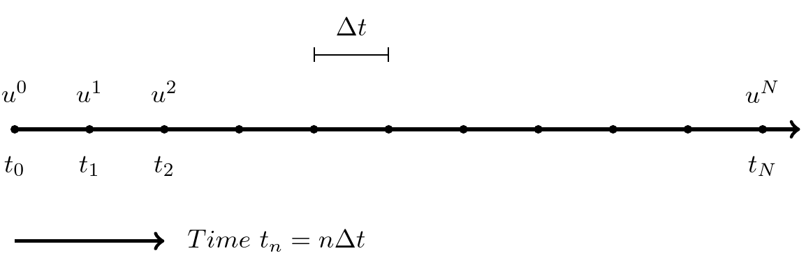
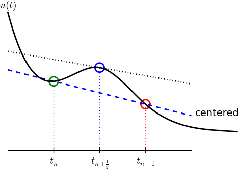

Lecture 1 - Algorithms and implementations for exponential decay models#
In lecture 1 we will consider a simple mathematical model for exponential decay. Important topics of the first lecture are
The finite difference (FD) method
Forward/Backward Euler methods
The Crank-Nicolson method
Stability of numerical schemes
Implementation of the FD methods using recursive solvers
Verification of the implementations
Error norms
Convergence rates
This first lecture may be easier to follow as the slides that were presented on the first day.
Finite difference models for exponential decay#
A model for exponential decay is
where \(a>0\) is a constant and \(u(t)\) is the solution. For this course it is not very important what \(u(t)\) represents, but it could be any scalar like temperature or money. Something that decays exponentially in time.
We want to solve Eq. (1) using a finite difference numerical method. This may seem strange since the exact solution to (1) is trivially obtained as
However, this exact solution will serve us well for validation of the finite difference schemes. Especially for the computation of convergence rates.
The Finite difference method#
Solving a differential equation by a finite difference method consists of four steps:
discretizing the domain,
fulfilling the equation at discrete time points,
replacing derivatives by finite differences,
solve the discretized problem. (Often with a recursive algorithm in 1D)
Step 1 - discretization#
The finite difference method divides (in 1D) the line into a mesh and solves equations only for specific locations (nodes) in the mesh. A mesh is created for \(t = 0, \Delta t, 2\Delta t, \ldots, N \Delta t\). To this end we use the discrete times \(t_n=n \Delta t\) for \(n=0, 1, \ldots N\) and \(T=t_N = N \Delta t\). Similarly we use the discrete solutions \(u^n = u(t_n)\) for \(n=0, 1, \ldots, N\).

The finite difference solution \(\{u^n\}_{n=0}^{N}\) is a mesh function and it is defined only at the mesh points in the domain. For example as shown below. Note that the FD solution is not necessarily equal to the exact solution.
Step 2 - fulfilling the equation at discrete time points#
The \(N+1\) unknowns \(\{u^n\}_{n=0}^{N}\) requires \(N+1\) equations. For our problem the initial condition is known and we set \(u^0=I\). This leaves \(N\) unknowns, or degrees of freedom. In order to find these unknown we can simply demand that
which gives us the \(N\) equations that we need.
Step 3: Replacing derivatives by finite differences#
Now it is time for the finite difference approximations of derivatives:
{kind=link}
Inserting the finite difference approximation in
gives
which is known as discrete equation, or discrete problem, or finite difference method/scheme.
Step 4: Formulating a recursive algorithm#
How can we actually compute the \(u^n\) values?
given \(u^0=I\)
compute \(u^1\) from \(u^0\)
compute \(u^2\) from \(u^1\)
compute \(u^3\) from \(u^2\) (and so forth)
In general: we have \(u^n\) and seek \(u^{n+1}\)
The Forward Euler scheme#
Solve wrt \(u^{n+1}\) to get the computational formula: $\( u^{n+1} = u^n - a(t_{n+1} -t_n)u^n \)$
Let us apply the scheme by hand#
Assume constant time spacing: \(\Delta t = t_{n+1}-t_n=\text{const}\) such that \(u^{n+1} = u^n (1- a \Delta t)\)
Ooops - we can find the numerical solution by hand (in this simple example)! No need for a computer (yet)…
A backward difference#
Here is another finite difference approximation to the derivative (backward difference):

The Backward Euler scheme#
Inserting the finite difference approximation in \(u'(t_n)=-au(t_n)\) yields the Backward Euler (BE) scheme:
Solve with respect to the unknown \(u^{n+1}\):
A centered difference#
Centered differences are better approximations than forward or backward differences.
{kind=link}
The Crank-Nicolson scheme; ideas#
Idea 1: let the ODE hold at \(t_{n+\half}\). With \(N+1\) points, that is \(N\) equations for \(n=0, 1, \ldots N-1\)
Idea 2: approximate \(u'(t_{n+\half})\) by a centered difference
Problem: \(u(t_{n+\half})\) is not defined, only \(u^n=u(t_n)\) and \(u^{n+1}=u(t_{n+1})\)
Solution (linear interpolation):
The Crank-Nicolson scheme; result#
Result:
Solve wrt to \(u^{n+1}\):
This is a Crank-Nicolson (CN) scheme or a midpoint or centered scheme.
The unifying \(\theta\)-rule#
The Forward Euler, Backward Euler, and Crank-Nicolson schemes can be formulated as one scheme with a varying parameter \(\theta\):
\(\theta =0\): Forward Euler
\(\theta =1\): Backward Euler
\(\theta =1/2\): Crank-Nicolson
We may alternatively choose any \(\theta\in [0, 1]\).
\(u^n\) is known, solve for \(u^{n+1}\):
Constant time step#
Very common assumption (not important, but exclusively used for simplicity hereafter): constant time step \(t_{n+1}-t_n\equiv\Delta t\)
Summary of schemes for constant time step
Implementation#
Model:
Numerical method:
for \(\theta\in [0,1]\). Note
\(\theta=0\) gives Forward Euler
\(\theta=1\) gives Backward Euler
\(\theta=1/2\) gives Crank-Nicolson
Requirements of a program#
Compute the numerical solution \(u^n\), \(n=1,2,\ldots,N\)
Display the numerical and exact solution \(u_e(t)=e^{-at}\)
Bring evidence to a correct implementation (verification)
Compare the numerical and the exact solution in a plot
Compute the error \(u_e (t_n) - u^n\)
If wanted, compute the convergence rate of the numerical scheme
Algorithm#
Store \(u^n\), \(n=0,1,\ldots,N\) in an array \(\boldsymbol{u}\).
Algorithm:
initialize \(u^0\)
for \(t=t_n\), \(n=1,2,\ldots,N\): compute \(u^n\) using the \(\theta\)-rule formula
import numpy as np
def solver(I, a, T, dt, theta):
"""Solve u'=-a*u, u(0)=I, for t in (0, T] with steps of dt."""
Nt = int(T/dt) # no of time intervals
T = Nt*dt # adjust T to fit time step dt
u = np.zeros(Nt+1) # array of u[n] values
t = np.linspace(0, T, Nt+1) # time mesh
u[0] = I # assign initial condition
for n in range(0, Nt): # n=0,1,...,Nt-1
u[n+1] = (1 - (1-theta)*a*dt)/(1 + theta*dt*a)*u[n]
return u, t
I, a, T, dt, theta = 1, 2, 8, 0.8, 1
u, t = solver(I, a, T, dt, theta)
# Write out a table of t and u values:
for i in range(len(t)):
print(f't={t[i]:6.3f} u={u[i]:g}')
t= 0.000 u=1
t= 0.800 u=0.384615
t= 1.600 u=0.147929
t= 2.400 u=0.0568958
t= 3.200 u=0.021883
t= 4.000 u=0.00841653
t= 4.800 u=0.00323713
t= 5.600 u=0.00124505
t= 6.400 u=0.000478865
t= 7.200 u=0.000184179
t= 8.000 u=7.0838e-05
For example, you have three arrays
Now compute
Regular (scalar) implementation:
N = 1000
u = np.random.random(N)
v = np.random.random(N)
w = np.zeros(N)
for i in range(N):
w[i] = u[i] * v[i]
Vectorized:
w[:] = u * v
Numpy is heavily vectorized! So much so that mult, add, div, etc are vectorized by default!
Now lets get rid of the for-loop!
u[0] = I # assign initial condition
for n in range(0, N): # n=0,1,...,N-1
u[n+1] = (1 - (1-theta)*a*dt)/(1 + theta*dt*a)*u[n]
How? This is difficult because it is a recursive update and not regular elementwise multiplication. But remember
Because we have this exact numerical solution we can implement
as follows
because
To show how cumprod works, just consider the following
np.cumprod([1, 2, 2, 2])
array([1, 2, 4, 8])
Why vectorization?#
Python for-loops are slow!
Python for-loops usually requires more lines of code.
def f0(u, I, theta, a, dt):
u[0] = I
u[1:] = (1 - (1-theta)*a*dt)/(1 + theta*dt*a)
u[:] = np.cumprod(u)
return u
def f1(u, I, theta, a, dt):
u[0] = I
for n in range(0, len(u)-1):
u[n+1] = (1 - (1-theta)*a*dt)/(1 + theta*dt*a)*u[n]
return u
I, a, T, dt, theta = 1, 2, 8, 0.8, 1
u, t = solver(I, a, T, dt, theta)
assert np.allclose(f0(u.copy(), I, theta, a, dt),
f1(u.copy(), I, theta, a, dt))
Lets try some timings!
%timeit -q -o -n 1000 f0(u, I, theta, a, dt)
<TimeitResult : 1.46 μs ± 65.8 ns per loop (mean ± std. dev. of 7 runs, 1,000 loops each)>
%timeit -q -o -n 1000 f1(u, I, theta, a, dt)
<TimeitResult : 2.16 μs ± 44.6 ns per loop (mean ± std. dev. of 7 runs, 1,000 loops each)>
Hmm. Not really what’s expected. Why? Because the array u is really short! Lets try a longer array
print(f"Length of u = {u.shape[0]}")
Length of u = 11
dt = dt/10
u, t = solver(I, a, T, dt, theta)
print(f"Length of u = {u.shape[0]}")
Length of u = 101
%timeit -q -o -n 100 f0(u, I, theta, a, dt)
<TimeitResult : 1.67 μs ± 72.3 ns per loop (mean ± std. dev. of 7 runs, 100 loops each)>
%timeit -q -o -n 100 f1(u, I, theta, a, dt)
<TimeitResult : 20.5 μs ± 807 ns per loop (mean ± std. dev. of 7 runs, 100 loops each)>
Even longer array:
dt = dt/10
u, t = solver(I, a, T, dt, theta)
print(f"Length of u = {u.shape[0]}")
Length of u = 1001
%timeit -q -o -n 100 f0(u, I, theta, a, dt)
<TimeitResult : 4.13 μs ± 1.19 μs per loop (mean ± std. dev. of 7 runs, 100 loops each)>
%timeit -q -o -n 100 f1(u, I, theta, a, dt)
<TimeitResult : 212 μs ± 4.47 μs per loop (mean ± std. dev. of 7 runs, 100 loops each)>
Vectorized code takes the same time! Only overhead costs, not the actual computation.
Plot the solution#
import matplotlib.pyplot as plt
I, a, T, dt, theta = 1, 2, 8, 0.8, 1
u, t = solver(I, a, T, dt, theta)
fig = plt.figure(figsize=(6, 4))
ax = fig.gca()
ax.plot(t, u);
Add legends, titles, exact solution, etc. Make the plot nice:-)
u_exact = lambda t, I, a: I*np.exp(-a*t)
I, a, T = 1., 2., 8.
u, t = solver(I=I, a=a, T=T, dt=0.8, theta=1)
te = np.linspace(0, T, 1000)
ue = u_exact(te, I, a)
fig = plt.figure(figsize=(6, 4))
plt.plot(t, u, 'bs-', te, ue, 'r')
plt.title('Decay')
plt.legend(['numerical', 'exact'])
plt.xlabel('Time'), plt.ylabel('u(t)');
Plotly is a very good alternative#
import plotly.express as px
pfig = px.line(x=t, y=u, labels={'x': 'Time', 'y': 'u(t)'},
width=600, height=400, title='Decay',
template="simple_white")
pfig.show()
Verifying the implementation#
Verification = bring evidence that the program works
Find suitable test problems
Make function for each test problem
Later: put the verification tests in a professional testing framework
Comparison with exact numerical solution#
Repeated use of the \(\theta\)-rule gives exact numerical solution:
Exact solution on the other hand:
Making a test based on an exact numerical solution#
The exact discrete solution is
Test if your solver gives
for a few precalculated steps.
Run a few numerical steps by hand#
Use a calculator (\(I=0.1\), \(\theta=0.8\), \(\Delta t =0.8\)):
The test based on exact numerical solution#
def test_solver_three_steps(solver):
"""Compare three steps with known manual computations."""
theta = 0.8
a = 2
I = 0.1
dt = 0.8
u_by_hand = np.array([I,
0.0298245614035,
0.00889504462912,
0.00265290804728])
Nt = 3 # number of time steps
u, t = solver(I=I, a=a, T=Nt*dt, dt=dt, theta=theta)
tol = 1E-14 # tolerance for comparing floats
diff = abs(u - u_by_hand).max()
success = diff < tol
assert success, diff
test_solver_three_steps(solver)
Quantifying the error#
Computing the norm of the error#
\(e^n = u^n - u_e(t_n)\) is a mesh function
Usually we want one number for the error
Use a norm of \(e^n\)
Norms of a function \(f(t)\):
Norms of mesh functions#
Problem: \(f^n =f(t_n)\) is a mesh function and hence not defined for all \(t\). How to integrate \(f^n\)?
Idea: Apply a numerical integration rule, using only the mesh points of the mesh function.
The Trapezoidal rule:
Common simplification yields the \(\ell^2\) norm of a mesh function:
Norms - notice!#
The continuous norms use capital \(L^2, L^1, L^\infty{}\)
The discrete norm uses lowercase \(\ell^2, \ell^1, \ell^{\infty}\)
Implementation of the error norm#
Python with vectorization:
u_exact = lambda t, I, a: I*np.exp(-a*t)
I, a, T, dt, theta = 1., 2., 8., 0.8, 1
u, t = solver(I, a, T, dt, theta)
en = u_exact(t, I, a) - u
E = np.sqrt(dt*np.sum(en**2))
print(f'Errornorm = {E}')
Errornorm = 0.1953976935916231